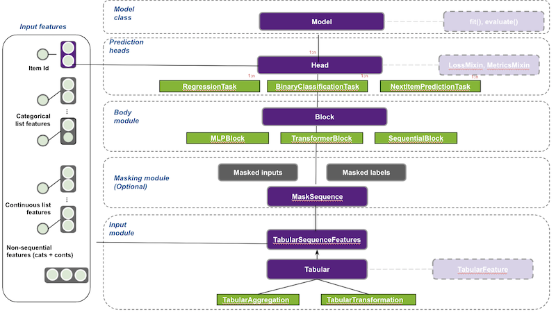

# Copyright 2021 NVIDIA Corporation. All Rights Reserved.
#
# Licensed under the Apache License, Version 2.0 (the "License");
# you may not use this file except in compliance with the License.
# You may obtain a copy of the License at
#
# http://www.apache.org/licenses/LICENSE-2.0
#
# Unless required by applicable law or agreed to in writing, software
# distributed under the License is distributed on an "AS IS" BASIS,
# WITHOUT WARRANTIES OR CONDITIONS OF ANY KIND, either express or implied.
# See the License for the specific language governing permissions and
# limitations under the License.
# ==============================================================================
Session-based Recommendation with XLNET
In this notebook we introduce the Transformers4Rec library for sequential and session-based recommendation. This notebook uses the Tensorflow API built with TensorFlow 2.x, but a PyTorch API is also available (see example). Transformers4Rec integrates with the popular HuggingFace’s Transformers and make it possible to experiment with cutting-edge implementation of the latest NLP Transformer architectures.
We demonstrate how to build a session-based recommendation model with the XLNET Transformer architecture. The XLNet architecture was designed to leverage the best of both auto-regressive language modeling and auto-encoding with its Permutation Language Modeling training method. In this example we will use XLNET with causal language modeling (CLM) training method.
In the previous notebook we went through our ETL pipeline with NVTabular library, and created sequential features to be used in training a session-based recommendation model. In this notebook we will learn:
Accelerating data loading of parquet files with multiple features on Tensorflow using NVTabular library
Training and evaluating a Transformer-based (XLNET-CLM) session-based recommendation model with multiple features
Build a DL model with Transformers4Rec library
Transformers4Rec supports multiple input features and provides configurable building blocks that can be easily combined for custom architectures:
TabularSequenceFeatures class that reads from schema and creates an input block. This input module combines different types of features (continuous, categorical & text) to a sequence.
MaskSequence to define masking schema and prepare the masked inputs and labels for the selected LM task.
TransformerBlock class that supports HuggingFace Transformers for session-based and sequential-based recommendation models.
SequentialBlock creates the body by mimicking tf.keras.Sequential class. It is designed to define our model as a sequence of layers.
Head where we define the prediction task of the model.
NextItemPredictionTask is the class to support next item prediction task.
You can check the full documentation of Transformers4Rec if needed.
Figure 1 illustrates Transformers4Rec meta-architecture and how each module/block interacts with each other.

Import required libraries
import os
import glob
from nvtabular.loader.tensorflow import KerasSequenceLoader
from transformers4rec import tf as tr
from transformers4rec.tf.ranking_metric import NDCGAt, RecallAt
import logging
logging.disable(logging.WARNING) # disable INFO and DEBUG logging everywhere
2021-11-24 17:16:37.072740: I tensorflow/core/platform/cpu_feature_guard.cc:142] This TensorFlow binary is optimized with oneAPI Deep Neural Network Library (oneDNN) to use the following CPU instructions in performance-critical operations: AVX2 AVX512F FMA
To enable them in other operations, rebuild TensorFlow with the appropriate compiler flags.
2021-11-24 17:16:38.461237: I tensorflow/core/common_runtime/gpu/gpu_device.cc:1510] Created device /job:localhost/replica:0/task:0/device:GPU:0 with 16249 MB memory: -> device: 0, name: Quadro GV100, pci bus id: 0000:2d:00.0, compute capability: 7.0
Transformers4Rec library relies on a schema object to automatically build all necessary layers to represent, normalize and aggregate input features. As you can see below, schema.pb is a protobuf file that contains metadata including statistics about features such as cardinality, min and max values and also tags features based on their characteristics and dtypes (e.g., categorical, continuous, list, integer).
# avoid numba warnings
from numba import config
config.CUDA_LOW_OCCUPANCY_WARNINGS = 0
Set the schema
from merlin_standard_lib import Schema
SCHEMA_PATH = "schema.pb"
schema = Schema().from_proto_text(SCHEMA_PATH)
!cat $SCHEMA_PATH
feature {
name: "session_id"
type: INT
int_domain {
name: "session_id"
min: 1
max: 100001
is_categorical: false
}
annotation {
tag: "groupby_col"
}
}
feature {
name: "category-list_trim"
value_count {
min: 2
max: 20
}
type: INT
int_domain {
name: "category-list_trim"
min: 1
max: 400
is_categorical: true
}
annotation {
tag: "list"
tag: "categorical"
tag: "item"
}
}
feature {
name: "item_id-list_trim"
value_count {
min: 2
max: 20
}
type: INT
int_domain {
name: "item_id/list"
min: 1
max: 50005
is_categorical: true
}
annotation {
tag: "item_id"
tag: "list"
tag: "categorical"
tag: "item"
}
}
feature {
name: "timestamp/age_days-list_trim"
value_count {
min: 2
max: 20
}
type: FLOAT
float_domain {
name: "timestamp/age_days-list_trim"
min: 0.0000003
max: 0.9999999
}
annotation {
tag: "continuous"
tag: "list"
}
}
feature {
name: "timestamp/weekday/sin-list_trim"
value_count {
min: 2
max: 20
}
type: FLOAT
float_domain {
name: "timestamp/weekday-sin_trim"
min: 0.0000003
max: 0.9999999
}
annotation {
tag: "continuous"
tag: "time"
tag: "list"
}
}
# You can select a subset of features for training
schema = schema.select_by_name(['item_id-list_trim',
'category-list_trim',
'timestamp/weekday/sin-list_trim',
'timestamp/age_days-list_trim'])
Define the sequential input module
Below we define our input block using the TabularSequenceFeatures class. The from_schema() method processes the schema and creates the necessary layers to represent features and aggregate them. It keeps only features tagged as categorical and continuous and supports data aggregation methods like concat and elementwise-sum techniques. It also support data augmentation techniques like stochastic swap noise. It outputs an interaction representation after combining all features and also the input mask according to the training task (more on this later).
The max_sequence_length argument defines the maximum sequence length of our sequential input, and if continuous_projection argument is set, all numerical features are concatenated and projected by an MLP block so that continuous features are represented by a vector of size defined by user, which is 64 in this example.
inputs = tr.TabularSequenceFeatures.from_schema(
schema,
max_sequence_length=20,
continuous_projection=64,
d_output=64,
masking="clm",
)
The output of the TabularSequenceFeatures module is the sequence of interactions embeddings vectors defined in the following steps:
Create sequence inputs: If the schema contains non sequential features, expand each feature to a sequence by repeating the value as many as the
max_sequence_lengthvalue.
Get a representation vector of categorical features: Project each sequential categorical feature using the related embedding table. The resulting tensor is of shape (bs, max_sequence_length, embed_dim).
Project scalar values if
continuous_projectionis set : Apply an MLP layer with hidden size equal tocontinuous_projectionvector size value. The resulting tensor is of shape (batch_size, max_sequence_length, continuous_projection).
Aggregate the list of features vectors to represent each interaction in the sequence with one vector: For example,
concatwill concat all vectors based on the last dimension-1and the resulting tensor will be of shape (batch_size, max_sequence_length, D) where D is the sum over all embedding dimensions and the value of continuous_projection.
If masking schema is set (needed only for the NextItemPredictionTask training), the masked labels are derived from the sequence of raw item-ids and the sequence of interactions embeddings are processed to mask information about the masked positions.
Define the Transformer Block
In the next cell, the whole model is build with a few lines of code. Here is a brief explanation of the main classes:
XLNetConfig - We have injected in the HF transformers config classes like
XLNetConfigthebuild()method, that provides default configuration to Transformer architectures for session-based recommendation. Here we use it to instantiate and configure an XLNET architecture.TransformerBlock class integrates with HF Transformers, which are made available as a sequence processing module for session-based and sequential-based recommendation models.
NextItemPredictionTask supports the next-item prediction task. We also support other predictions tasks, like classification and regression for the whole sequence.
# Define XLNetConfig class and set default parameters for HF XLNet config
transformer_config = tr.XLNetConfig.build(
d_model=64, n_head=4, n_layer=2, total_seq_length=20
)
# Define the model block including: inputs, masking, projection and transformer block.
body = tr.SequentialBlock(
[inputs, tr.TransformerBlock(transformer_config, masking=inputs.masking)]
)
# Defines the evaluation top-N metrics and the cut-offs
metrics = [
NDCGAt(top_ks=[20, 40], labels_onehot=True),
RecallAt(top_ks=[20, 40], labels_onehot=True)
]
# link task to body and generate the end-to-end keras model
task = tr.NextItemPredictionTask(weight_tying=True, metrics=metrics)
model = task.to_model(body=body)
Set DataLoader
We use the NVTabular KerasSequenceLoader Dataloader for optimized loading of multiple features from input parquet files. In our experiments, we see a speed-up by 9x of the same training workflow with NVTabular dataloader. NVTabular dataloader’s features are:
removing bottleneck of item-by-item dataloading
enabling larger than memory dataset by streaming from disk
reading data directly into GPU memory and remove CPU-GPU communication
preparing batch asynchronously in GPU to avoid CPU-GPU communication
supporting commonly used .parquet format
easy integration into existing TensorFlow pipelines by using similar API - works with tf.keras models
You can learn more about this data loader here and here.
# Define categorical and continuous columns
x_cat_names, x_cont_names = ['category-list_trim', 'item_id-list_trim'], ['timestamp/age_days-list_trim', 'timestamp/weekday/sin-list_trim']
# dictionary representing max sequence length for each column
sparse_features_max = {
fname: 20
for fname in x_cat_names + x_cont_names
}
def get_dataloader(paths_or_dataset, batch_size=128):
dataloader = KerasSequenceLoader(
paths_or_dataset,
batch_size=batch_size,
label_names=None,
cat_names=x_cat_names,
cont_names=x_cont_names,
sparse_names=list(sparse_features_max.keys()),
sparse_max=sparse_features_max,
sparse_as_dense=True,
)
return dataloader.map(lambda X, y: (X, []))
Daily Fine-Tuning: Training over a time window
Here we do daily fine-tuning meaning that we use the first day to train and second day to evaluate, then we use the second day data to train the model by resuming from the first step, and evaluate on the third day, so on so forth.
Define the output folder of the processed parquet files
OUTPUT_DIR = os.environ.get("OUTPUT_DIR", "/workspace/data/sessions_by_day")
Train the model
import tensorflow as tf
model.compile(optimizer="adam", run_eagerly=True)
start_time_window_index = 1
final_time_window_index = 3
# Iterating over days of one week
for time_index in range(start_time_window_index, final_time_window_index):
# Set data
time_index_train = time_index
time_index_eval = time_index + 1
train_paths = glob.glob(os.path.join(OUTPUT_DIR, f"{time_index_train}/train.parquet"))
eval_paths = glob.glob(os.path.join(OUTPUT_DIR, f"{time_index_eval}/valid.parquet"))
# Train on day related to time_index
print('*'*20)
print("Launch training for day %s are:" %time_index)
print('*'*20 + '\n')
train_loader = get_dataloader(train_paths)
losses = model.fit(train_loader, epochs=5)
model.reset_metrics()
# Evaluate on the following day
eval_loader = get_dataloader(eval_paths)
eval_metrics = model.evaluate(eval_loader, return_dict=True)
print('*'*20)
print("Eval results for day %s are:\t" %time_index_eval)
print('\n' + '*'*20 + '\n')
for key in sorted(eval_metrics.keys()):
print(" %s = %s" % (key, str(eval_metrics[key])))
********************
Launch training for day 1 are:
********************
2021-11-24 17:16:47.136720: I tensorflow/stream_executor/cuda/cuda_dnn.cc:369] Loaded cuDNN version 8204
2021-11-24 17:16:47.282196: I tensorflow/compiler/mlir/mlir_graph_optimization_pass.cc:185] None of the MLIR Optimization Passes are enabled (registered 2)
Epoch 1/5
7/7 [==============================] - 22s 3s/step - train_ndcg@20: 0.0026 - train_ndcg@40: 0.0028 - train_recall@20: 0.0050 - train_recall@40: 0.0061 - loss: 10.8527 - regularization_loss: 0.0000e+00 - total_loss: 10.8527
Epoch 2/5
7/7 [==============================] - 21s 3s/step - train_ndcg@20: 0.0313 - train_ndcg@40: 0.0357 - train_recall@20: 0.0672 - train_recall@40: 0.0886 - loss: 9.8833 - regularization_loss: 0.0000e+00 - total_loss: 9.8833
Epoch 3/5
7/7 [==============================] - 21s 3s/step - train_ndcg@20: 0.0906 - train_ndcg@40: 0.1005 - train_recall@20: 0.2174 - train_recall@40: 0.2661 - loss: 8.9810 - regularization_loss: 0.0000e+00 - total_loss: 8.9810
Epoch 4/5
7/7 [==============================] - 21s 3s/step - train_ndcg@20: 0.1235 - train_ndcg@40: 0.1497 - train_recall@20: 0.3307 - train_recall@40: 0.4586 - loss: 8.1265 - regularization_loss: 0.0000e+00 - total_loss: 8.1265
Epoch 5/5
7/7 [==============================] - 21s 3s/step - train_ndcg@20: 0.1292 - train_ndcg@40: 0.1730 - train_recall@20: 0.3561 - train_recall@40: 0.5703 - loss: 7.2556 - regularization_loss: 0.0000e+00 - total_loss: 7.2556
1/1 [==============================] - 3s 3s/step - eval_ndcg@20: 0.1371 - eval_ndcg@40: 0.1823 - eval_recall@20: 0.3801 - eval_recall@40: 0.5980 - loss: 6.8134 - regularization_loss: 0.0000e+00 - total_loss: 6.8134
********************
Eval results for day 2 are:
********************
eval_ndcg@20 = 0.13714689016342163
eval_ndcg@40 = 0.18226708471775055
eval_recall@20 = 0.38009950518608093
eval_recall@40 = 0.5980099439620972
loss = 6.81339168548584
regularization_loss = 0
total_loss = 6.81339168548584
********************
Launch training for day 2 are:
********************
Epoch 1/5
7/7 [==============================] - 21s 3s/step - train_ndcg@20: 0.1350 - train_ndcg@40: 0.1832 - train_recall@20: 0.3581 - train_recall@40: 0.5898 - loss: 6.4791 - regularization_loss: 0.0000e+00 - total_loss: 6.4791
Epoch 2/5
7/7 [==============================] - 21s 3s/step - train_ndcg@20: 0.1472 - train_ndcg@40: 0.1974 - train_recall@20: 0.3793 - train_recall@40: 0.6229 - loss: 5.7670 - regularization_loss: 0.0000e+00 - total_loss: 5.7670
Epoch 3/5
7/7 [==============================] - 21s 3s/step - train_ndcg@20: 0.1674 - train_ndcg@40: 0.2100 - train_recall@20: 0.4410 - train_recall@40: 0.6505 - loss: 5.2392 - regularization_loss: 0.0000e+00 - total_loss: 5.2392
Epoch 4/5
7/7 [==============================] - 21s 3s/step - train_ndcg@20: 0.1761 - train_ndcg@40: 0.2243 - train_recall@20: 0.4710 - train_recall@40: 0.7071 - loss: 4.8951 - regularization_loss: 0.0000e+00 - total_loss: 4.8951
Epoch 5/5
7/7 [==============================] - 21s 3s/step - train_ndcg@20: 0.1864 - train_ndcg@40: 0.2375 - train_recall@20: 0.4934 - train_recall@40: 0.7415 - loss: 4.6883 - regularization_loss: 0.0000e+00 - total_loss: 4.6883
1/1 [==============================] - 3s 3s/step - eval_ndcg@20: 0.1768 - eval_ndcg@40: 0.2286 - eval_recall@20: 0.4763 - eval_recall@40: 0.7302 - loss: 4.6789 - regularization_loss: 0.0000e+00 - total_loss: 4.6789
********************
Eval results for day 3 are:
********************
eval_ndcg@20 = 0.17680498957633972
eval_ndcg@40 = 0.2286442071199417
eval_recall@20 = 0.47628459334373474
eval_recall@40 = 0.7302371263504028
loss = 4.678927421569824
regularization_loss = 0
total_loss = 4.678927421569824
Save the model
model.save('./tmp/tensorflow')
2021-11-24 17:20:32.337934: W tensorflow/python/util/util.cc:348] Sets are not currently considered sequences, but this may change in the future, so consider avoiding using them.
Reload the model
model = tf.keras.models.load_model('./tmp/tensorflow')
batch = next(iter(eval_loader))
# Generate predictions (logits) from reloaded model with a batch
model(batch[0])
<tf.Tensor: shape=(118, 50006), dtype=float32, numpy=
array([[-13.77997 , -11.321821 , -3.4781942, ..., -12.7864895,
-13.239983 , -13.766869 ],
[-13.768703 , -11.319653 , -3.4630215, ..., -12.772872 ,
-13.257902 , -13.800142 ],
[-13.795613 , -11.329163 , -3.4603472, ..., -12.7655 ,
-13.299693 , -13.799895 ],
...,
[-13.7550335, -11.327356 , -3.4488232, ..., -12.773474 ,
-13.267937 , -13.7868 ],
[-13.756104 , -11.325677 , -3.4566376, ..., -12.775398 ,
-13.245429 , -13.793298 ],
[-13.7463665, -11.3194275, -3.4377723, ..., -12.755983 ,
-13.272619 , -13.808911 ]], dtype=float32)>
That’s it!
You have just trained your session-based recommendation model using Transformers4Rec Tensorflow API.